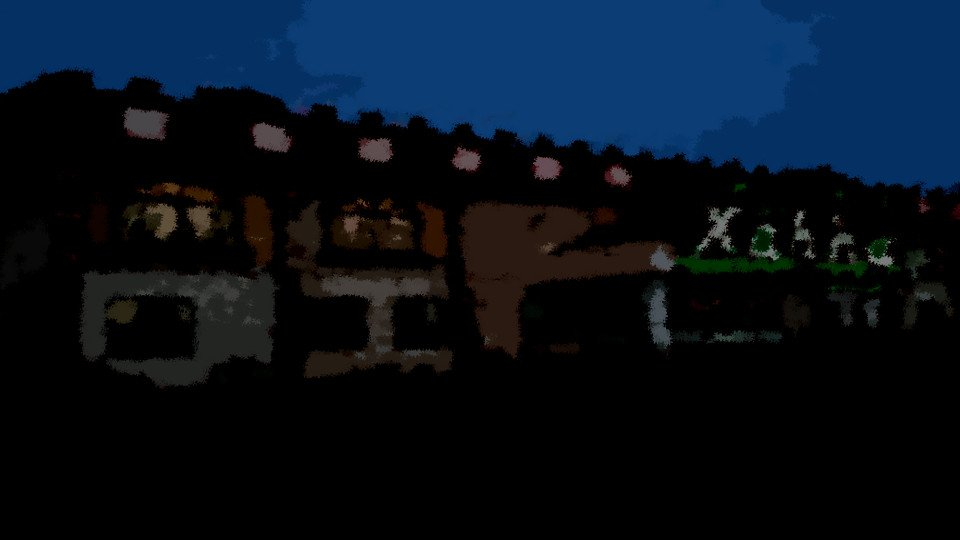
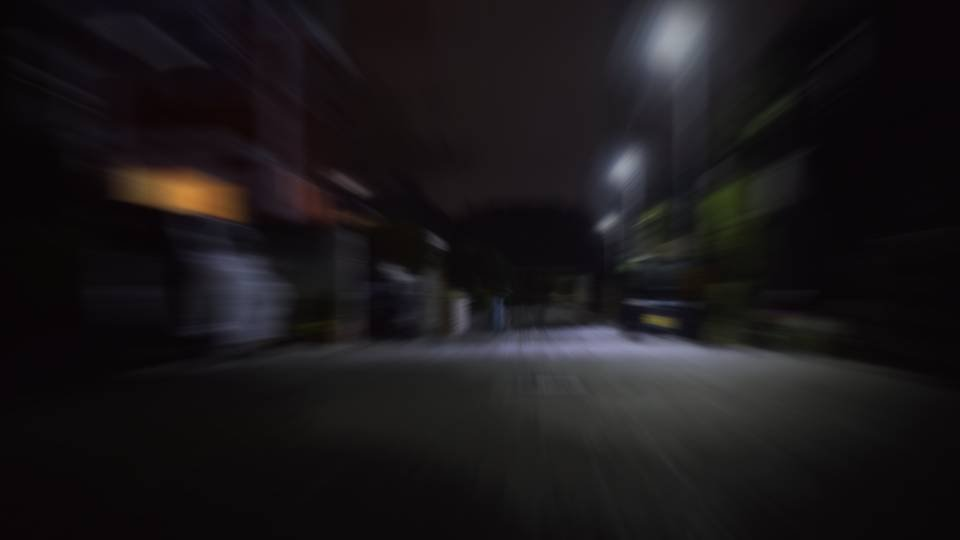
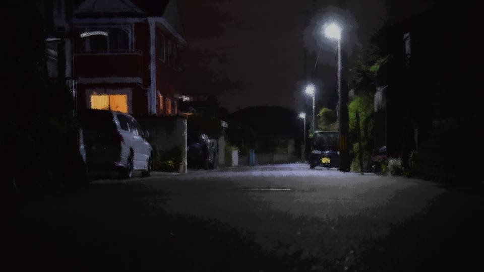
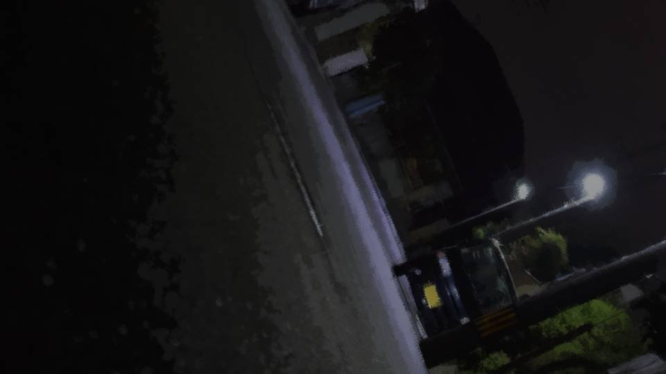
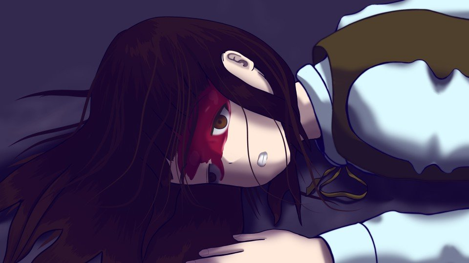
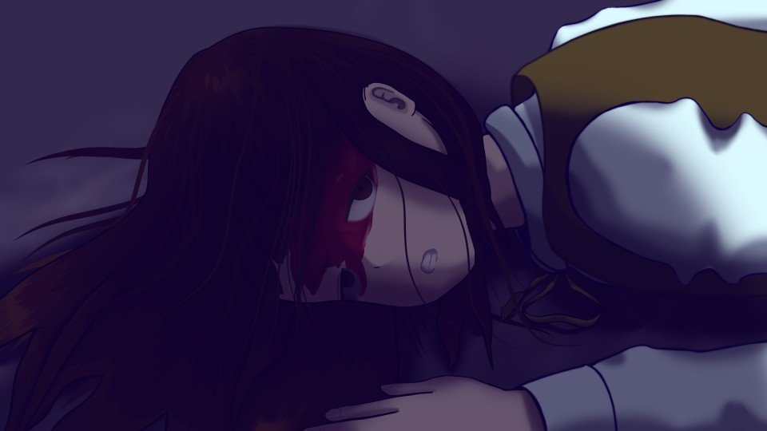

Surveillance


"Well then, I'll go home and look into the past incident.
Senpai, what I'd like you to do is think about whether anything comes to mind about the cause of Kogori-senpai's April sickness and her danger sense. [TN: A pun on gogatsu-byo, 'May sickness,' Japan's term for the May blues.]
If you find out anything, please get in touch."
"Okay."
Senpai agreed with a "guess it can't be helped" sort of smile.
"Okay."
Senpai agreed with a "guess it can't be helped" sort of smile.
"Well then, be careful."
Senpai rode her bike back home.
"Now then, Operation start."
Senpai seen off, I got on my bike too and set my feet on the pedals.
"Now then, Operation start."
Senpai seen off, I got on my bike too and set my feet on the pedals.
"Huh?"
I noticed something was wrong right away.
My bike's tire had gone flat.
I noticed something was wrong right away.
My bike's tire had gone flat.
Pushing the bike all the way home is going to be quite a chore... but there's no other way...
Senpai's words,
"Be careful,"
stuck in my mind, strangely.
"Be careful,"
stuck in my mind, strangely.

The daytime clouds had cleared away completely, and everything around was lit by moonlight.
The cherry blossoms in that light were very beautiful.
Pushing my bike along, I thought over this incident once more.
The cherry blossoms in that light were very beautiful.
Pushing my bike along, I thought over this incident once more.
The truth is, I had noticed something that even Kogori-senpai probably hadn't noticed herself: the rule behind Senpai's intuition.
Senpai's intuition only starts to function when the person who is going to be harmed
"I'm going there," "I'm doing that,"
says it to Senpai directly,
or when Senpai sees them in action.
Senpai's intuition only starts to function when the person who is going to be harmed
"I'm going there," "I'm doing that,"
says it to Senpai directly,
or when Senpai sees them in action.
So even if she learns about the situation of the person who's going to be harmed secondhand, her intuition doesn't work.
This time, even though her dad was killed, Senpai didn't notice, probably because she heard about the business trip from someone else.
Maybe it was Kogori-senpai's mother, or someone around there.
This time, even though her dad was killed, Senpai didn't notice, probably because she heard about the business trip from someone else.
Maybe it was Kogori-senpai's mother, or someone around there.
But... something is still missing.
Senpai's intuition: the conditions it needs to work.
There must be something more.
Senpai's intuition: the conditions it needs to work.
There must be something more.
Let me get my head back on the incident.
Could this incident not have been prevented?
Surely that isn't so. In the first place, a culprit brings about an incident because they have a purpose.
Could this incident not have been prevented?
Surely that isn't so. In the first place, a culprit brings about an incident because they have a purpose.
Even a thrill-killer has a purpose: wanting to be a thrill-killer.
In this case, I'll assume it's not a thrill-killer but a copycat.
In this case, I'll assume it's not a thrill-killer but a copycat.
Yes: that it's connected to the Megasawa City case, and also to the accident in Central Park 10 years ago.
If I'd grasped that beforehand, maybe I could have stopped it somehow.
What exactly was the Central Park accident like?
I stopped walking and took out my smartphone.
If I'd grasped that beforehand, maybe I could have stopped it somehow.
What exactly was the Central Park accident like?
I stopped walking and took out my smartphone.

“Motoki-cho Central Park accident”
When I searched with those words... the results were nothing but today's incident.
Let me narrow down the time period and search.
When I searched with those words... the results were nothing but today's incident.
Let me narrow down the time period and search.
........................
There it is, this is it!
Shiyo 788―exactly 12 years ago today―April 8.
Hanami visitor dies in accident at Central Park.
Died after falling from a cherry tree.
The one who died was... No way...
Shiyo 788―exactly 12 years ago today―April 8.
Hanami visitor dies in accident at Central Park.
Died after falling from a cherry tree.
The one who died was... No way...
It can't be...!
Then today, that person's― that person's actions, what did they mean!?
Then today, that person's― that person's actions, what did they mean!?
My heartbeat grew impossibly fast.
Why...! Is that person the killer...!?
Why...! Is that person the killer...!?
I can't just stand here! I have to plan the next Operation, fast!
When I took my eyes off my smartphone and looked up, the cherry tree in front of me came into view.
When I took my eyes off my smartphone and looked up, the cherry tree in front of me came into view.
"............!!?"
Under the tree, a bright-red person with the skin stripped off was lit by the moonlight...!
No, no!
This is a hallucination!
This is a hallucination!
I rubbed my eyes and looked at the tree once more.
What met my eyes was a bright-red― just a bright-red mailbox.
I looked around, but there was no sign of anyone at all.
What met my eyes was a bright-red― just a bright-red mailbox.
I looked around, but there was no sign of anyone at all.
Apparently it really had been a hallucination.
I'm so scared right now that I'd see a hallucination like that.
That's right, I'm very scared right now.
Because today's incident isn't over yet.
It has only just begun.
I'm so scared right now that I'd see a hallucination like that.
That's right, I'm very scared right now.
Because today's incident isn't over yet.
It has only just begun.
"To Kogori-senpai... to Senpai...!"
Kogori-senpai―I tried to call her, but my hands shook, and the sweat on them got in the way, so I couldn't make the call the way I wanted.
"Really! Work! At a time like this...!"
I jabbed at the screen and swiped my fingers across it with all my strength.
Kogori-senpai―I tried to call her, but my hands shook, and the sweat on them got in the way, so I couldn't make the call the way I wanted.
"Really! Work! At a time like this...!"
I jabbed at the screen and swiped my fingers across it with all my strength.
"Oh!"
My smartphone slipped out of my shaking hands and fell into the storm drain.
What do I do! At this rate it's way worse than Operation failed! Kogori-senpai is in danger!
Next to be killed will be Senpai, and also...!
My smartphone slipped out of my shaking hands and fell into the storm drain.
What do I do! At this rate it's way worse than Operation failed! Kogori-senpai is in danger!
Next to be killed will be Senpai, and also...!

I let go of my flat-tired bike and ran for the police station as fast as I could.
I didn't know how many minutes it would take to get there.
Gasping for breath, I ran as far as I could run.
I didn't know how many minutes it would take to get there.
Gasping for breath, I ran as far as I could run.

"Hah! Hah!"
I put my hands on my knees and stopped.
There was no sign of anyone around, and no sound.
My own ragged breathing sounded strangely loud in my ears.
"Senpai... Kogori-senpai...!"
I put my hands on my knees and stopped.
There was no sign of anyone around, and no sound.
My own ragged breathing sounded strangely loud in my ears.
"Senpai... Kogori-senpai...!"
The dark road, with few streetlights, went on and on.
The moon seemed to be hidden, and I couldn't see well ahead.
The moon seemed to be hidden, and I couldn't see well ahead.
Wait, what am I panicking for!
There's no need for me to go to the police station myself! All I have to do is borrow a phone at a house nearby!
Just as I was about to start running again,
There's no need for me to go to the police station myself! All I have to do is borrow a phone at a house nearby!
Just as I was about to start running again,

A heavy blow struck my head, and my legs gave way.
What happened...?
In the world turned on its side, someone was standing there, gripping a nata and a round-tipped blunt weapon.
In the world turned on its side, someone was standing there, gripping a nata and a round-tipped blunt weapon.

Am I going to die in a place like this...?
Why me?
Senpai, get out of this town, quickly...
Why me?
Senpai, get out of this town, quickly...

I saw the blunt weapon swing up high.
Shiyo 800, April 8 23:50 Anonymous
hey now, word is there's been another murder!
Shiyo 800, April 8 23:50 Anonymous
yeah yeah, nice bait
Shiyo 800, April 8 23:55 Anonymous
the one who died is a new first-year girl, apparently. her head got smashed in, they say
hey now, word is there's been another murder!
Shiyo 800, April 8 23:50 Anonymous
yeah yeah, nice bait
Shiyo 800, April 8 23:55 Anonymous
the one who died is a new first-year girl, apparently. her head got smashed in, they say
Shiyo 800, April 8 23:56 Anonymous
seriously? so it's a random attacker or some pervert after all?
Shiyo 800, April 9 0:05 Anonymous
erina goto (15)
cause of death: crushing of the brain from a hard blow to the head, they say
crushing of the brain means her head's all smashed to mush, huh
Shiyo 800, April 9 0:05 Anonymous
ahh, that genius girl!
seriously? so it's a random attacker or some pervert after all?
Shiyo 800, April 9 0:05 Anonymous
erina goto (15)
cause of death: crushing of the brain from a hard blow to the head, they say
crushing of the brain means her head's all smashed to mush, huh
Shiyo 800, April 9 0:05 Anonymous
ahh, that genius girl!
Shiyo 800, April 9 0:08 Anonymous
huh? that erina goto?
Shiyo 800, April 9 0:10 Anonymous
two in one day, huh.
won't somebody die tomorrow too?
Shiyo 800, April 9 0:12 Anonymous
i'm seriously staying home tomorrow
huh? that erina goto?
Shiyo 800, April 9 0:10 Anonymous
two in one day, huh.
won't somebody die tomorrow too?
Shiyo 800, April 9 0:12 Anonymous
i'm seriously staying home tomorrow
Shiyo 800, April 9 0:14 Anonymous
i don't want to die
Shiyo 800, April 9 0:20 Anonymous
the genius girl skipped cram school and went to zahha with friends, apparently
Shiyo 800, April 9 0:22 Anonymous
yikes, if she'd gone to cram school she wouldn't have died, right?
i don't want to die
Shiyo 800, April 9 0:20 Anonymous
the genius girl skipped cram school and went to zahha with friends, apparently
Shiyo 800, April 9 0:22 Anonymous
yikes, if she'd gone to cram school she wouldn't have died, right?
Shiyo 800, April 9 0:25 Anonymous
scary scary
just one tiny slip can cost you your life
Shiyo 800, April 9 0:26 Anonymous
fyi the friend who went to zahha is a third-year girl from our school
Shiyo 800, April 9 0:27 Anonymous
huh? the third-year's the killer?
scary scary
just one tiny slip can cost you your life
Shiyo 800, April 9 0:26 Anonymous
fyi the friend who went to zahha is a third-year girl from our school
Shiyo 800, April 9 0:27 Anonymous
huh? the third-year's the killer?
Shiyo 800, April 9 0:28 Anonymous
a third-year girl skinning the old guy too, that's so hype
Shiyo 800, April 9 0:29 Anonymous
same killer?
Shiyo 800, April 9 0:29 Anonymous
well obviously
a third-year girl skinning the old guy too, that's so hype
Shiyo 800, April 9 0:29 Anonymous
same killer?
Shiyo 800, April 9 0:29 Anonymous
well obviously
Shiyo 800, April 9 0:29 Anonymous
not necessarily
like, the third-year isn't necessarily the killer either
Shiyo 800, April 9 0:30 Anonymous
well, still, she's probably being questioned at the police station right about now
not necessarily
like, the third-year isn't necessarily the killer either
Shiyo 800, April 9 0:30 Anonymous
well, still, she's probably being questioned at the police station right about now
Shiyo 800, April 9 0:33 Anonymous
come to think of it, the kid of the flayed body is a second-year girl, right?
so the victim's kid and the killer run into each other at the police station?
come to think of it, the kid of the flayed body is a second-year girl, right?
so the victim's kid and the killer run into each other at the police station?
Shiyo 800, April 9 0:34 Anonymous
told you, that doesn't mean she's the killer
Shiyo 800, April 9 0:35 Anonymous
still, feel bad for her
even if she's not the killer, she can't stay at school anymore
Shiyo 800, April 9 0:35 Anonymous
socially wiped out just for hanging out with somebody before they got killed
life sure is harsh
told you, that doesn't mean she's the killer
Shiyo 800, April 9 0:35 Anonymous
still, feel bad for her
even if she's not the killer, she can't stay at school anymore
Shiyo 800, April 9 0:35 Anonymous
socially wiped out just for hanging out with somebody before they got killed
life sure is harsh
Read ✓ Next in this arc →